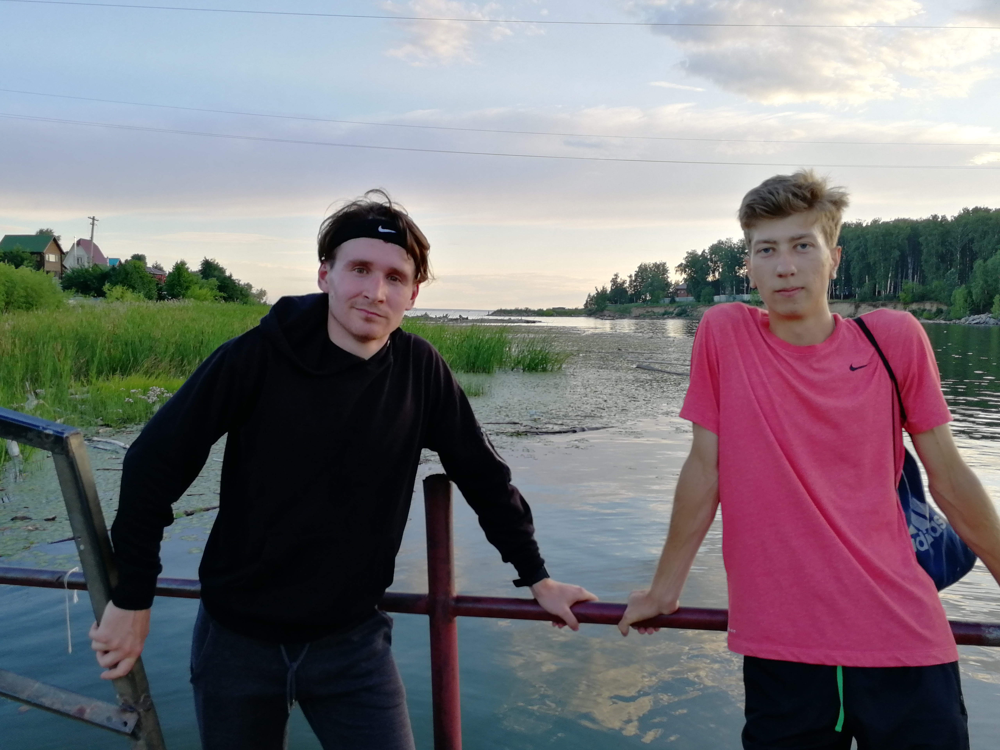
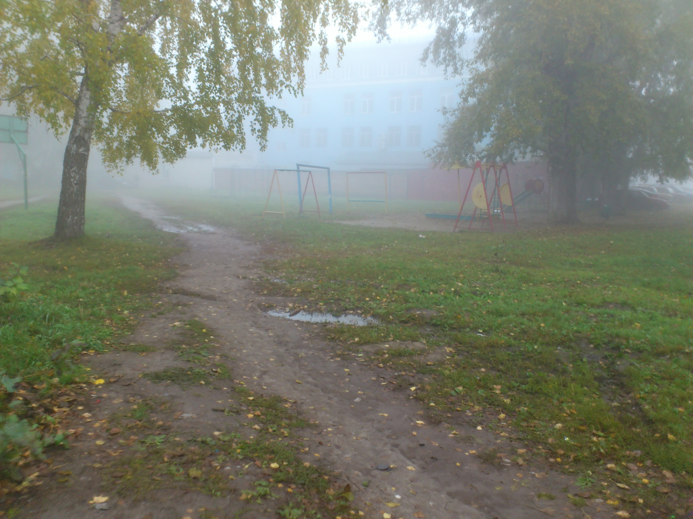
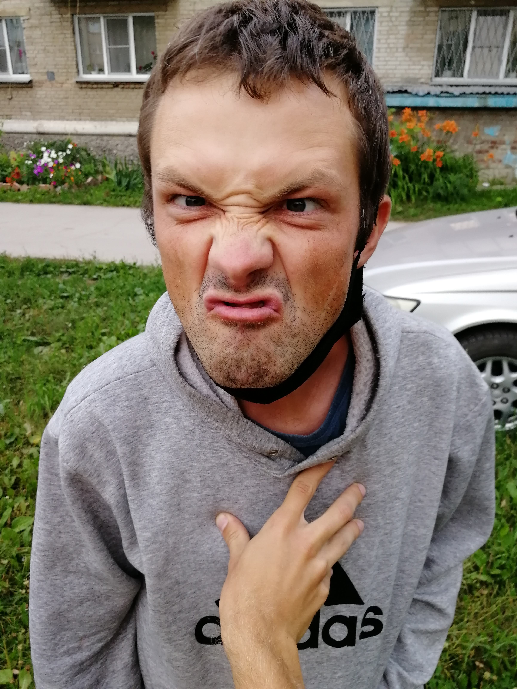
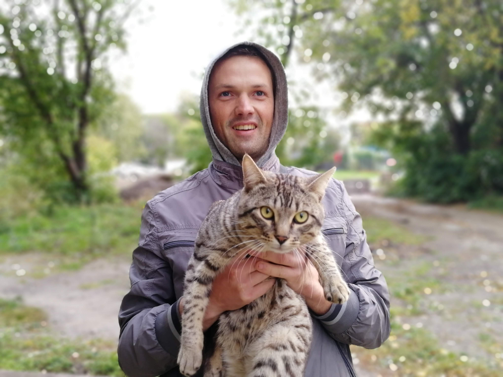
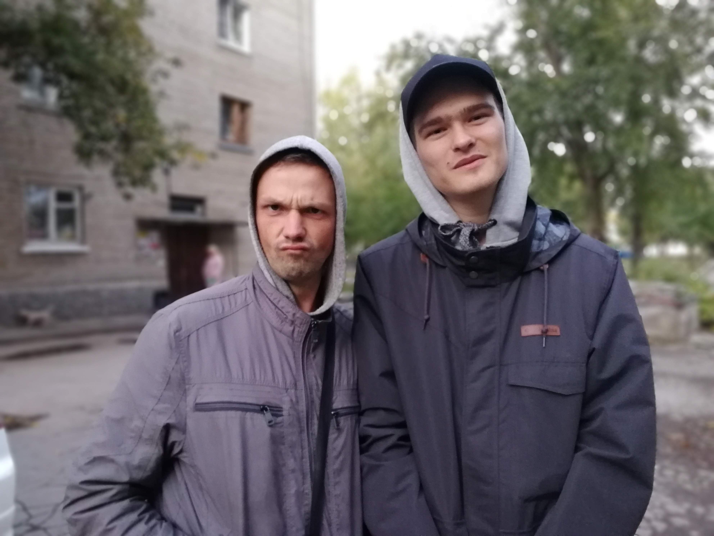

Добрый день, мои дорогие читатели! Хочу поделиться с Вами своими чувствами и эмоциями, которые испытывал я, проживая те моменты, да и сейчас, пересматривая фотографии...
Меня зовут Антон, и я проживаю на 16 квартале города Бердска уже многие годы
Это ютуб канал о велопутешествиях и пеших походах. Фотография сделана во время пробежки "Круг почёта"









Добавлю позже